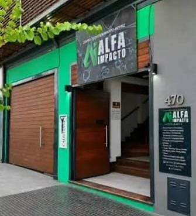

¿Necesito experiencia previa para comenzar?
No. Contamos con clases para personas que están comenzando desde cero, así como también para niveles intermedios y avanzados.
Aquí encontrarás respuestas a las preguntas más comunes sobre nuestras clases de Pole Sport. Si no encuentras la respuesta que buscas, no dudes en contactarnos.
No. Contamos con clases para personas que están comenzando desde cero, así como también para niveles intermedios y avanzados.
Se recomienda asistir con ropa cómoda y que deje al descubierto brazos y piernas para facilitar el agarre al pole.
Sí. Podés realizar una clase de prueba para conocer la disciplina, el espacio y la modalidad de entrenamiento.
Los grupos tienen un máximo de 7 estudiantes para garantizar una atención personalizada durante el entrenamiento.
Sí, siempre que haya un lugar disponible en otro turno. La recuperación debe coordinarse previamente con la profesora.
